Znanstveni dokaz dubinskog čišćenja.
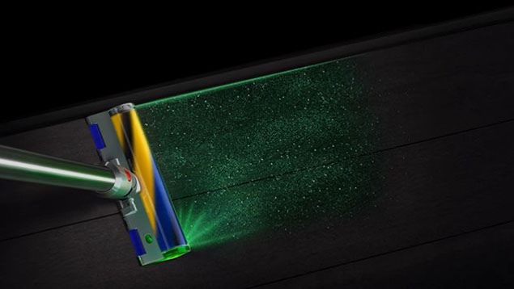
Otkriva
Laser Slim Fluffy™ četka za tvrde podove ima laser koji otkria čestice koje inače ne vidite - tako da vam ništa ne promakne.
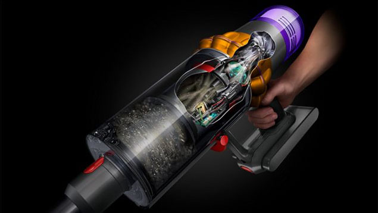
Broji
Piezo senzor broji i mjeri veličinu čestica prašine.
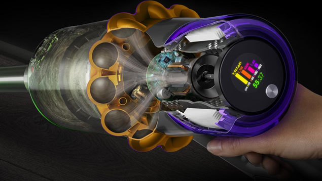
Reagira
Inteligentno prilagođava snagu razini prašine.
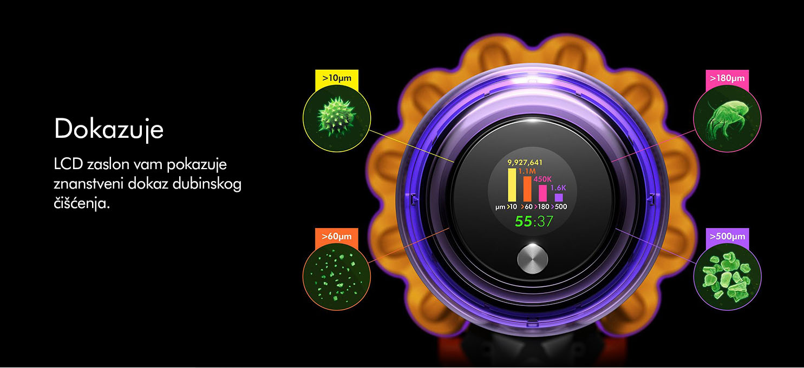
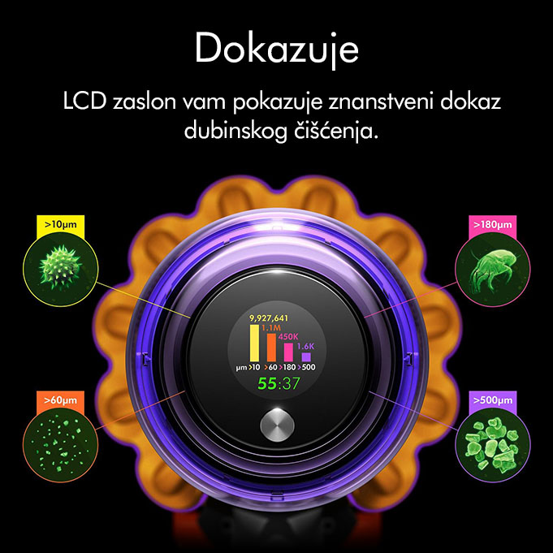
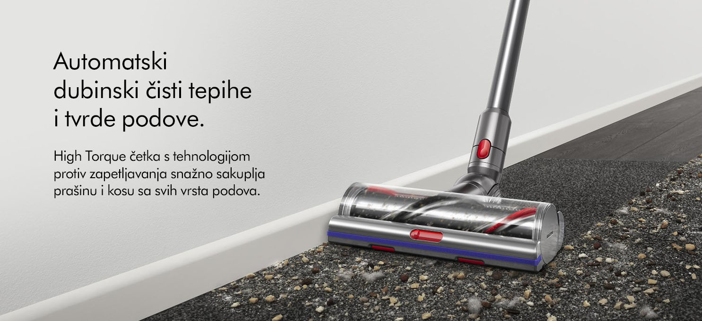
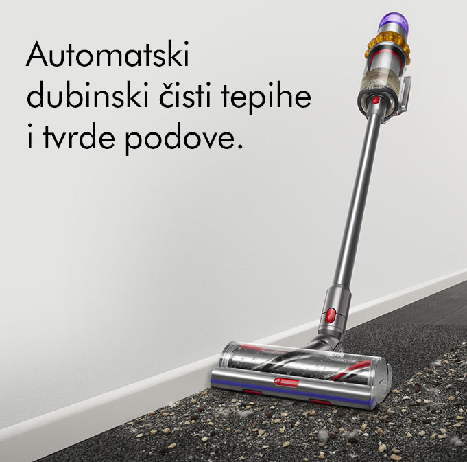
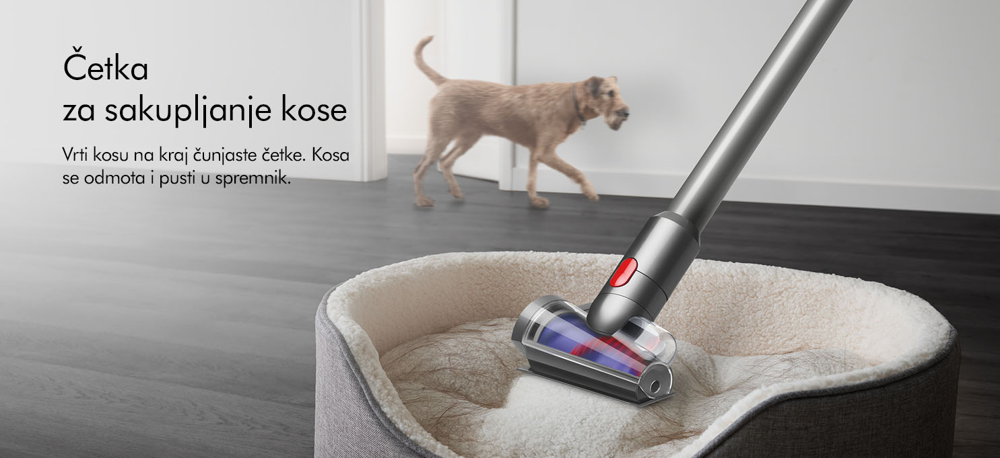
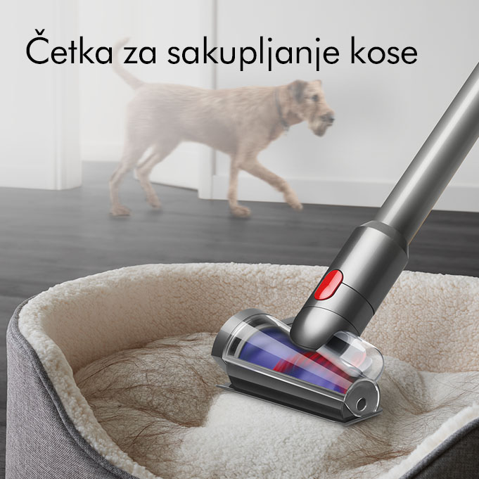
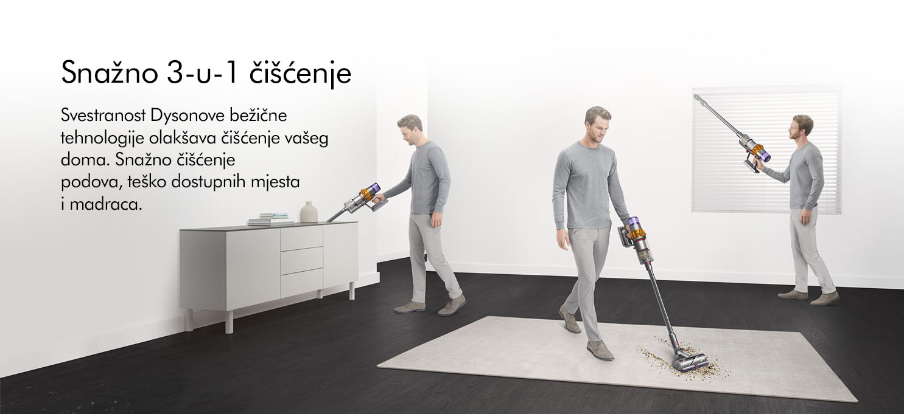
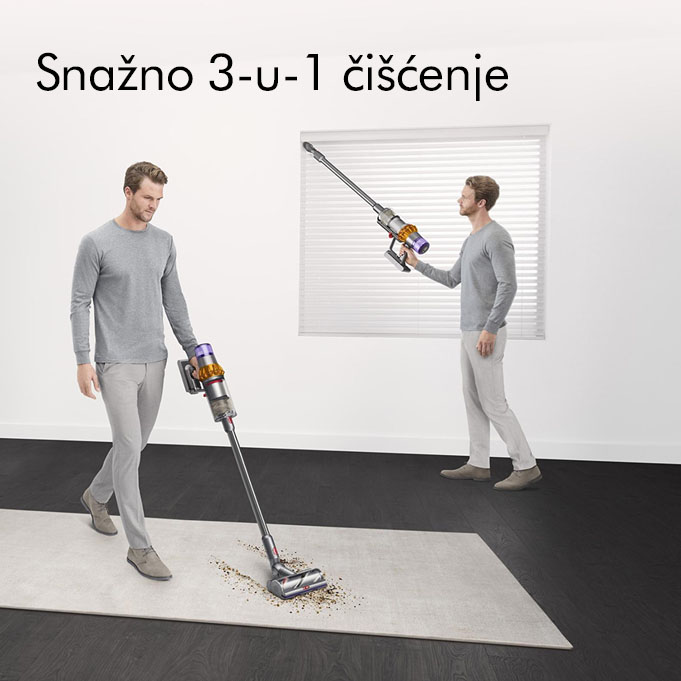
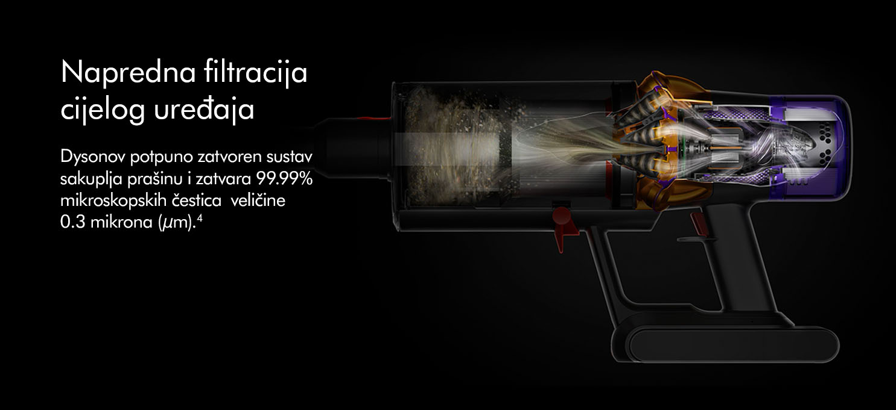

1Laser napravljen za tvrde podove. Na učinkovitost lasera utječu uvjeti osvjetljenja okoline, vrsta prljavštine i površine.
2Testirano na ulazu u ASTM F558, pun prašine.
3Točnost se može razlikovati. Najbolja preciznost je u Auto načinu rada. Značajka automatske rampe samo u Auto načinu rada.
4U načinu Boost. Svi ostali načini postižu najmanje 99,97% filtracije.